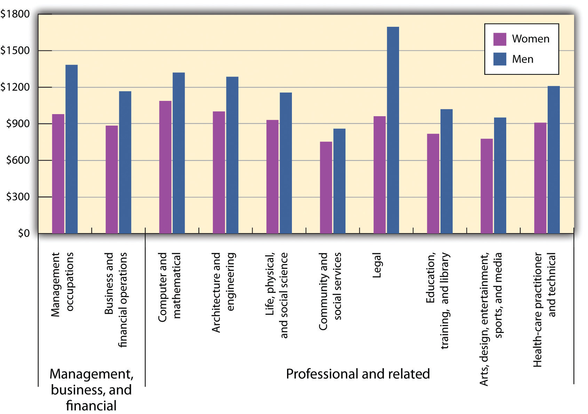

While the 1964 Civil Rights Act is the most important federal civil rights law, it isn’t the only basis for employment discrimination. Protections also exist to protect women against unequal pay, pregnant women, workers older than forty, and people with disabilities. In this section we’ll examine these other statutes.
The first statute is the 1866 Civil Rights ActFederal law that makes everyone born in the United States citizens and makes job discrimination on the basis of race illegal.. It was passed after the Civil War to guarantee freed slaves the rights of citizenship, and it is still in force today. It prohibits discrimination on the basis of race, including private discrimination. The 1866 Civil Rights Act provides victims of race discrimination several advantages over Title VII. Unlike Title VII, victims do not need to file a complaint with the Equal Employment Opportunity Commission (EEOC) first—they can go straight to federal court to file a complaint. In addition, the strict filing deadlines under Title VII do not apply. Finally, the statutory limits on punitive damages under Title VII do not apply, so higher damages are possible under the 1866 Civil Rights Act. Unlike Title VII, however, the 1866 Civil Rights Act only prohibits racial discrimination. In most race discrimination cases, plaintiffs file both Title VII claims and claims under the 1866 Civil Rights Act. These are commonly known as Section 1983A federal lawsuit based on an alleged violation of the 1866 Civil Rights Act. claims, named after the section of the U.S. statute that allows victims of race discrimination to file their complaints in federal court.
Figure 12.9 Median Weekly Earnings of Women and Men in Management, Professional, and Related Occupational Groups, 2008
Women still make less than their male counterparts across all industries.
Source: Adapted from U.S. Bureau of Labor Statistics, “Women and Men in Management, Professional, and Related Occupations, 2008,” August 7, 2009, http://bls.gov/opub/ted/2009/ted_20090807.htm (accessed September 27, 2010).
The Equal Pay Act of 1963Federal law that requires equal pay for equal work. seeks to eliminate the wage gap between women and men. In 1970 women earned roughly sixty-two cents for every dollar men earned. In 2004 that number had climbed to eighty cents. In 2008 women still earn less than their male counterparts in all sectors of the economy, as the chart from the Bureau of Labor Statistics demonstrates (Figure 12.9 "Median Weekly Earnings of Women and Men in Management, Professional, and Related Occupational Groups, 2008"). The Equal Pay Act demands that employers provide equal pay for equal work, and it applies to all employers. All forms of compensation are covered by the act, including benefits such as vacation and compensation such as salary and bonus. Victims do not need to file a complaint with the EEOC under the Equal Pay Act, but may instead go straight to federal court, as long as they do so within two years of the alleged unlawful employment practice. Victims typically also pursue Title VII claims at the same time they pursue Equal Pay Act claims.
The Equal Pay Act is very difficult to enforce. Since demanding identical pay is virtually impossible due to differences in jobs and job performance, courts have essentially interpreted the law as requiring substantially equal pay for substantially equal work. Courts are extremely reluctant to get into the business of telling employers what they should pay their workers. In 2009 the EEOC received fewer than one thousand complaints about unequal pay nationwide, or less than 1 percent of the charges filed.U.S. Equal Employment Opportunity Commission, “Charge Statistics FY 1997 through FY 2009,” http://eeoc.gov/eeoc/statistics/enforcement/charges.cfm (accessed September 27, 2010).
http://www.npr.org/templates/story/story.php?storyId=125998232
In some part, women make less money than men because they voluntarily leave the workforce to raise children, or because women are directed to occupations with traditionally less pay. Even if these factors are eliminated, however, there is still a pay gap between women and men. This gap grows over time, leaving women with hundreds of thousands less at the end of a career when compared with a male’s comparable career. Now, Congress is considering new legislation to address the problem in the Paycheck Fairness ActA proposed federal law to increase damages under the Equal Pay Act and reduce the possible defenses for employers., as this NPR story explains.
The Pregnancy Discrimination Act of 1978Federal law that amended Title VII to make it illegal to discriminate against a woman because she is pregnant or considering pregnancy or because of prejudices against pregnant women by coworkers or customers. amended Title VII to make it illegal to discriminate on the basis of pregnancy, childbirth, or related medical conditions. This means employers cannot refuse to hire a woman because she is pregnant or is considering becoming pregnant, or because of prejudices held by coworkers or customers about pregnant women. A female worker who becomes pregnant is entitled to work as long as she can perform her tasks, and her job must be held open for her while she is on maternity leave. Furthermore, pregnancy-related benefits cannot be limited only to married employees.
The Age Discrimination in Employment Act of 1967 (ADEA)Federal law that prohibits discrimination on the basis of age, protecting workers over the age of forty. makes it illegal to discriminate against workers over the age of forty. It does not protect younger workers, who are of course subject to a form of discrimination every time they are told an employer is looking for someone with more experience. The ADEA applies to any employer with over twenty workers, including state governments. Partnerships such as law firms and accounting firms are also covered under the ADEA. In 2007 a major law firm, Sidley Austin, agreed to pay $27.5 million to former partners the firm had terminated because of their age, resulting in a median payout of over $875,000 per terminated partner.U.S. Equal Employment Opportunity Commission, “$27.5 Million Consent Decree Resolves EEOC Age Bias Suit against Sidley Austin,” October 5, 2007, http://www.eeoc.gov/eeoc/newsroom/release/10-5-07.cfm (accessed September 27, 2010). The ADEA prohibits employers from treating any covered person unfavorably in any term or condition of employment, including the hiring decision. It is illegal, for example, to hire an inexperienced twenty-five-year-old for a job when a fifty-year-old is better qualified and willing to work for the same conditions. An employer may, however, favor an older worker over a younger worker even if the younger worker is over forty years of age. Mandatory retirement age is illegal under the ADEA, except for very high-level executives over the age of sixty-five who are entitled to a pension.
Employers should be very careful about asking for a job applicant’s date of birth during the application process, as this might be a sign of possible discriminatory intent. Employers may discriminate against older workers if there is a bona fide occupational qualification (BFOQ), such as a production company casting for a young actor to play a young character, or airlines setting a mandatory retirement age for pilots.
Of course, older workers can still be dismissed for good cause, such as poor job performance or employee misconduct. Companies may also administer a layoff plan or early retirement plan that is evenly applied across all workers, and can offer early retirement incentives to induce workers to retire. Typically when companies ask a worker to retire early or take an incentive to leave the company, the worker is asked to sign an ADEA waiverA waiver signed by an employee that he or she is voluntarily giving up his or her rights to file a claim under the ADEA., giving up any claims the worker may have under the ADEA. These waivers are fully enforceable under the ADEA as long as they are “knowing and voluntary,” in writing, and provide the worker with at least twenty-one days to consider the waiver and seven days to revoke it after signing it.
Although it was passed around the same time as Title VII, for decades courts held that only disparate treatment cases under the ADEA were viable. That meant plaintiffs had to find proof of intentional discrimination to recover, so there were relatively few successful age discrimination cases. To make matters even harder for older workers, in 2009 the Supreme Court held that older workers suing under the ADEA had to prove that their age was a “but-for” reason for their termination, or the sole cause for termination.Gross v. FBL Financial Services, 557 U.S. ___ (2009), http://www.law.cornell.edu/supct/html/08-441.ZS.html (accessed October 2, 2010). This makes age discrimination much harder to prove than discrimination because of sex or race, where illegal discrimination only has to be one of several factors that motivated the employer. In fact, the 2009 decision made it all but impossible for older workers to prove intentional discrimination, and congressional efforts to overturn the decision in the form of the Protecting Older Workers Against Discrimination Act are pending.
In 2005 the Supreme Court held that the disparate impact theory can apply to age discrimination cases.Smith v. City of Jackson, 544 U.S. 228 (2005). For example, an employer cannot require office workers to undertake strenuous physical tests if those tests are not related to the job being performed and would have a disparate impact on older workers. Rather than open the floodgates to ADEA litigation, however, the ensuing years saw relatively little increase in ADEA-related litigation. One reason may be that the Court emphasized that the ADEA contains a unique defense for employers not present in Title VII: employers are allowed to take unfavorable action against older workers for “reasonable factors other than age” (RFOA). In the 2005 case, a city had decided to give larger pay increases to younger workers compared to older workers, for the stated reason that the city wanted to make pay for younger workers competitive with the market. The Supreme Court found this explanation reasonable. In 2010 the EEOC published a proposed rule to clarify the meaning of “reasonable factors.” The proposed rule would allow neutral policies that negatively affect older workers only if the policy is “objectively reasonable when viewed from the perspective of a reasonable employer under like circumstances.”U.S. Equal Employment Opportunity Commission, “EEOC Solicits Comments on Proposed Rule concerning ‘Reasonable Factors other than Age’ under the ADEA,” February 18, 2010, http://www.eeoc.gov/eeoc/newsroom/release/2-18-10.cfm (accessed September 27, 2010). If the proposed rule is adopted, it would make it much more difficult for employers to rely on “reasonable factors” as a defense to an age discrimination claim.
After the major laws of the 1960s were passed, Congress did very little to protect civil rights in the workplace for many years. This changed in 1990, when Congress passed a major new piece of legislation known as the Americans with Disabilities Act of 1990 (ADA)Federal law that prohibits discrimination against persons with disabilities., signed into law by President George H. W. Bush. With passage of the ADA, Congress sought to expand the promise of equal opportunity in the workplace to cover persons with disabilities. Unfortunately, the ADA was less than clear in many critical aspects when it was written, leaving courts to interpret what Congress may have meant with specific ADA language. An increasingly conservative judiciary, including the Supreme Court, began interpreting the ADA fairly narrowly, making it harder for people with disabilities to win their court cases. Congress responded with the Americans with Disabilities Amendments Act of 2008 (ADAA)Federal law that amends the Americans with Disabilities Act and reverses several key Supreme Court opinions interpreting the ADA., signed into law by President George W. Bush, which specifically overturned several key Supreme Court decisions to broaden the scope of the ADA.
The ADA is broken down into several titles. Title III, for example, deals with requirements for public accommodations such as wheelchair ramps, elevators, and accessible restrooms for new facilities. Title II deals with the ADA’s applicability to state and local governments. For employees, the most important provisions are located in Title I, which makes it illegal for employers with fifteen or more employees to discriminate against “qualified individuals with disabilities.”
It is a common misconception that the ADA requires employers to hire disabled workers over able-bodied workers. This is simply not true because the ADA only applies to the qualified disabledA person who meets the minimum educational, skill, and experience requirements for the job posted, with or without reasonable accommodation.. To be qualified, the individual must meet the legitimate skill, experience, education, or other requirements for the position he or she is seeking and be able to perform the “essential functions” of the job without reasonable accommodation. In other words, the first step an employer must take is to define what the essential functionsJob functions whose removal would fundamentally change the nature of the job. of the job are, and then see if a disabled individual who has applied for the job meets the requirements for the job and can perform those essential functions. Obviously, someone who is legally blind will not be permitted to be a bus driver or airline pilot under this test. Similarly, a paraplegic will not be qualified to work as a forklift operator since that person will be unable to perform the essential functions of that job without reasonable accommodation. On the other hand, the “essential functions” test means that employers must be very careful in denying employment to someone who is disabled. If the reason for denying employment is the disabled person’s inability to perform some incidental task (rather than an essential function), then that is illegal discrimination. The ADA also permits employers to exclude any disabled individual who poses a direct threat to the health or safety to the individual or of others, if the risk of substantial harm cannot be reduced below the level of “direct threat” through reasonable accommodation.
The ADA makes it illegal for an employer to require a job applicant take a medical exam before an employment offer is made. However, after a job offer has been made, applicants can be asked to take medical and drug exams. Tests for illegal use of drugs, any time during employment, are permitted under the ADA.
One of the most vexing questions faced by employers is in defining who is disabled. The ADA states that an individual is disabled if he or she has a “physical or mental impairment that substantially limits one or more major life activities,” has a record of such impairment, or is regarded as having such an impairment. Major life activities include seeing, hearing, speaking, walking, running, breathing, learning, and caring for oneself. For example, consider a person being actively treated for cancer. During the treatment, many major life activities may be substantially limited, so the person is disabled. However, if a major life activity is not limited but the person loses his or her hair as a result of chemotherapy, he or she may be “regarded” as having an impairment, which makes him or her disabled under the ADA. An employer who purposefully refuses to hire a qualified job applicant with no hair because the employer believes the applicant has cancer (regardless of whether the cancer is active or in remission) is therefore violating the ADA. Finally, if the cancer patient recovers fully and has no physical sign of cancer, that patient is still considered protected by the ADA because he has a “record” of a qualifying disability.
After the ADA’s passage in 1990, the Supreme Court began confronting the meaning of these terms in a series of cases. In one case, the Court held that anyone with a disability that could be mitigated or corrected was no longer disabled under the ADA.Sutton v. United Airlines, 527 U.S. 471 (1999). This decision led to uproar and controversy. By narrowing the definition of who was disabled, the Court made it very hard for disabled persons to prove discrimination. A diabetic who can control the disease with insulin, for example, was not disabled under this definition. Therefore, an employer who fired a diabetic for taking breaks to inject insulin was not violating the ADA. The ADAA specifically overturns this case, and now employers are prohibited from considering mitigating measures such as medication or technology when determining whether or not a major life activity is substantially limited. The ADAA does carve out one exception: anyone with poor vision that is correctable with glasses or contact lenses is not disabled under the ADA.
In another case limiting the definition of who is disabled, the Court held that a physical or mental impairment must have a substantial effect on an employee’s daily life, not just that person’s ability to perform his or her specific job.Toyota Motor Manufacturing v. Williams, 534 U.S. 184 (2002). This case has also been overruled by the ADAA, which directs the EEOC to issue new guidelines that are much more liberal in interpreting the meaning of what it means to substantially limit a major life activity.
Under the new ADAA and EEOC guidelines, a list of impairments that substantially limit a major life activity that will “consistently” result in a disability determination might include blindness, deafness, intellectual disability, missing limbs, mobility impairments requiring the use of a wheelchair, autism, cancer, cerebral palsy, diabetes, epilepsy, HIV/AIDS, multiple sclerosis, muscular dystrophy, major depression, bipolar disorder, posttraumatic stress disorder, obsessive compulsive disorder, and schizophrenia.U.S. Equal Employment Opportunity Commission, “Summary of Key Provisions: EEOC’s Notice of Proposed Rulemaking (NPRM) to Implement the ADA Amendments Act of 2008 (ADAA),” http://www.eeoc.gov/laws/regulations/adaaa-summary.cfm (accessed September 27, 2010). Other impairments that may require more analysis to determine if they substantially limit an individual’s major life activities include asthma, high blood pressure, back and leg impairments, learning disabilities, panic or anxiety disorders, some forms of depression, carpal tunnel syndrome, and hyperthyroidism. The impairment cannot be temporary or nonchronic (such as the common cold, seasonal influenza, sprained joint, minor gastrointestinal disorders, seasonal allergies, broken bones, and appendicitis). However, an impairment that is episodic such as epilepsy or cancer would qualify if it limits a major life activity while it is active. Pregnant women are generally not considered disabled, although of course other civil rights statutes, such as Title VII, may protect them. Note that while current illegal drug users are not considered disabled, alcoholics may be considered disabled if the disease substantially limits a major life activity.
Although an employer is not required to hire the unqualified disabled, if it does hire a disabled individual it must provide reasonable accommodationAny requested reasonable change in the work environment of a disabled person that would permit that person to perform the essential functions of his or her job. to any disabled worker who asks for it. Reasonable accommodation is any change or adjustment to the work environment that would allow the disabled worker to perform the essential functions of the job or to allow the disabled worker to enjoy the benefits and privileges of employment equal to employees without disabilities. Reasonable accommodation might include allowing the worker to work part-time or modified work schedules; reassigning the worker to a vacant position; purchasing special equipment or software; providing readers or interpreters; or adjusting or modifying exams, training materials, and policies. Employers do not have to undertake reasonable accommodation if doing so would cause them undue hardshipAn excuse from providing accommodation because it represents a significant difficulty or expense to the employer., meaning it would require significant difficulty or expense, or significantly alter the nature or operation of the business. Among factors to be considered in whether an accommodation would pose an undue hardship are the cost of the accommodation as well as the employer’s size and financial resources.
The 1866 Civil Rights Act prevents private discrimination on the basis of race, and provides a quick route for victims of racial discrimination to federal court without following procedural gateways established by the EEOC. The Equal Pay Act requires employers to pay men and women substantially equal pay for substantially equal work, but it is very difficult to enforce. Title VII also protects pregnant women from workplace discrimination. The Age Discrimination in Employment Act prohibits discrimination against workers over the age of forty. The BFOQ defense is available for age discrimination claims, as well as taking adverse action for a reasonable factor other than age. The Americans with Disabilities Act prohibits employment discrimination against the qualified disabled and prohibits preemployment medical testing. To be considered disabled, an individual must demonstrate a mental or physical impairment that substantially limits a major life activity. Disabled persons are entitled to reasonable accommodation in the workplace, as long as reasonable accommodation does not place any undue hardship on the employer.